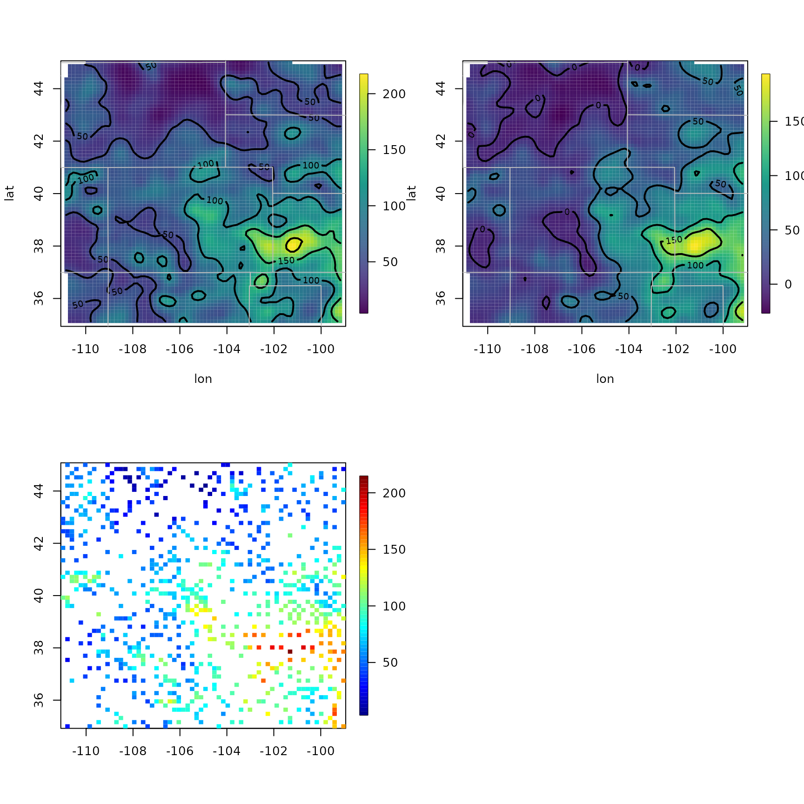
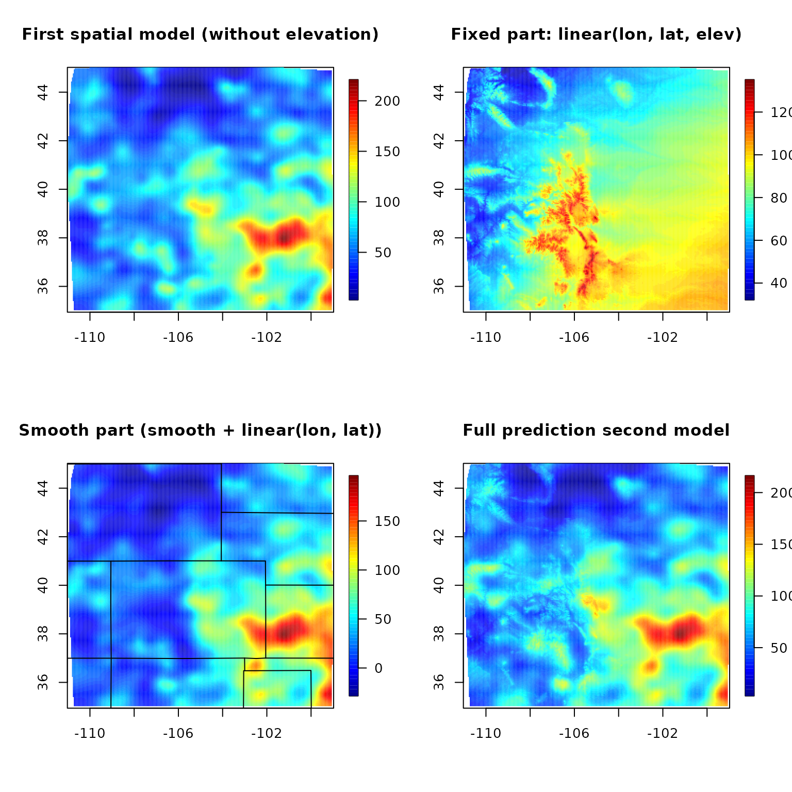

library(fields)
#> Loading required package: spam
#> Spam version 2.9-1 (2022-08-07) is loaded.
#> Type 'help( Spam)' or 'demo( spam)' for a short introduction
#> and overview of this package.
#> Help for individual functions is also obtained by adding the
#> suffix '.spam' to the function name, e.g. 'help( chol.spam)'.
#>
#> Attaching package: 'spam'
#> The following objects are masked from 'package:base':
#>
#> backsolve, forwardsolve
#> Loading required package: viridis
#> Loading required package: viridisLite
#>
#> Try help(fields) to get started.
# An elevation DEM from the PRISM climate data product (4km resolution)
data(RMelevation)
grid.list <- RMelevation[1:2]
# Ipaper::print2(RMelevation, grid.list)
str(RMprecip)
#> List of 3
#> $ x :'data.frame': 806 obs. of 2 variables:
#> ..$ lon: num [1:806] -111 -110 -110 -109 -110 ...
#> ..$ lat: num [1:806] 36.7 36.1 35.7 36.4 37 ...
#> $ elev: num [1:806] 2196 1710 1937 1976 1696 ...
#> $ y : num [1:806] 81 63 36 46 33 40 97 99 58 32 ...
out0 <- Tps(RMprecip$x, RMprecip$y) # without elevation covariate
out <- Tps(RMprecip$x, RMprecip$y, Z = RMprecip$elev) # with elevation covariate
# NOTE: out$d[4] is the estimated elevation coefficient
# it is easy to get the smooth surface separate from the elevation.
out.p <- predictSurface(out, drop.Z = TRUE)
set.panel(2, 2)
#> plot window will lay out plots in a 2 by 2 matrix
surface(out0)
US(add = TRUE, col = "grey")
surface(out.p) # delete elev
US(add = TRUE, col = "grey")
# and if the estimate is of high resolution and you get by with
# a simple discretizing -- does not work in this case!
quilt.plot(out$x, out$fitted.values)
fit.full <- predictSurface(out, grid.list, ZGrid = RMelevation)
fit0 <- predictSurface(out0, grid.list) # without elevation
fit.fixed <- predictSurface(out, grid.list, just.fixed = TRUE, ZGrid = RMelevation) # lon, lat, elev
fit.smooth <- predictSurface(out, grid.list, drop.Z = TRUE) # smooth part + linear lon lat terms
set.panel(2, 2)
#> plot window will lay out plots in a 2 by 2 matrix
image.plot(fit0)
title("First spatial model (without elevation)")
image.plot(fit.fixed)
title("Fixed part: linear(lon, lat, elev)")
image.plot(fit.smooth)
title("Smooth part (smooth + linear(lon, lat))")
US(add = TRUE)
image.plot(fit.full)
title("Full prediction second model")
set.panel()
#> plot window will lay out plots in a 1 by 1 matrix
system.time({
r_low <- Tps(RMprecip$x, RMprecip$y, Z = RMprecip$elev) # with elevation covariate
})
#> user system elapsed
#> 0.468 0.075 0.304
# not always work
system.time({
r_fst1 <- fastTps(RMprecip$x, RMprecip$y, Z = RMprecip$elev,
aRange = 200, lon.lat = TRUE) # with elevation covariate
})
#> user system elapsed
#> 2.368 0.651 1.587
system.time({
r_fst2 <- fastTps(RMprecip$x, RMprecip$y,
# m = 2,
aRange = 3.0,
profileLambda = FALSE
)
})
#> user system elapsed
#> 2.629 0.838 1.768
# in this case not work